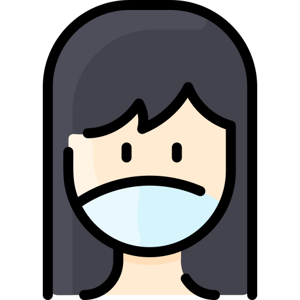
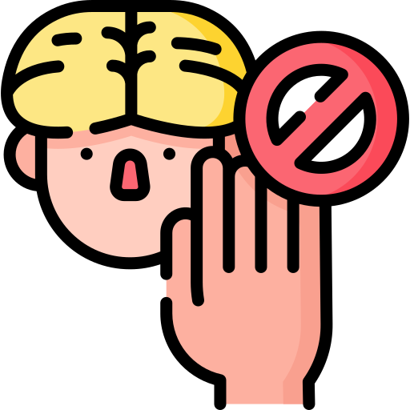

Pencegahan COVID 19:
Untuk mencegah penyebaran covid-19 dapat dilakukan serangkaian cara dibawah ini yaitu dengan

Mencucui tangan
Mencuci tangan dengan sabun dan air mengalir selama 20 detik merupakan langkah awal yang sangat penting dalam pencegahan penyebaran virus corona.

Memakai masker
Virus corona dapat masuk ke dalam tubuh melalui selaput lender seperti mata,mulut,hidung. Penggunaan masker dapat meminimalisir penularan virus corona.

Social distancing
Menjaga jarak dengan sesama dapat mencegah penularan virus corona.

Hindari sentuh wajah
Karena tangan dapat menjadi sumber penyakit sebab sering kontak langsung dengan benda dan orang lain.